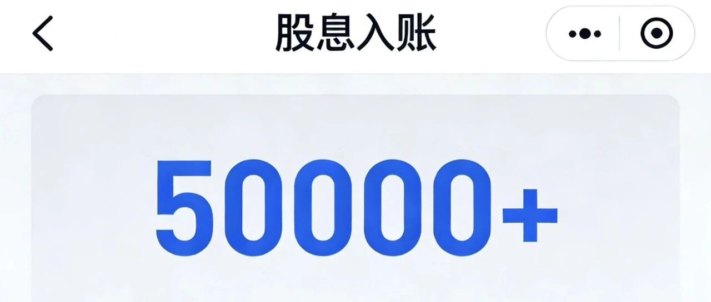

靠股息生活，躺平了8年！
点击关注 秋秋在分享
一起实现财务自由退休
大家好，我是秋秋呀～
今天分享一个靠股息生活8年的澳洲博主Tracey Edwards，她用分红支付开销，彻底告别职场，过上了Fire的生活。
在追求财务自由的路上，我总爱研究各种经验，少走弯路！这也是我坚持写东西的原因，总能给需要的人吧。

不谋而合，我之前也开设了一个退休账户，计划每年存入10万，专攒高股息股票收利息。
看了下去年都分红了，10万一年有5000多，美滋滋！
100万真的会有五万左右能覆盖生活费，但是我要慢慢投。
分红，就是上市公司把赚的钱按持股比例分给股东，你持有时间越长、数量越多，每年拿到的股息就越多。分红并不影响股票持股，股票涨跌依旧存在。
分红高低每一家也不同，常见的银行、能源、消费行业高，且相对稳定。
举个例子：五粮液1手100股，价格一万多块钱。
按2025年分红方案，每10股派25.78元，你买一万多块钱的，分红是257.8元，一年分两次收入500左右，股息率约4.8%-5.2%。

图片是我收到的分红，按这个比例:
• 10万投资五粮液，一年分红约4800-5200元；
• 100万投资五粮液，一年分红约4.8-5.2万元。
我买的银行、海油也都类似，比银行利息高出不少。
这里我不推荐任何股票，只是说一下吃股息的逻辑。
如果你的股息能稳定覆盖日常花费，就相当于靠股票‘发工资’生活”了，能“靠分红吃股息”实现FIRE。
我也是这么期待的：
不买房只买股票？
很多人觉得FIRE一个重要指标是房产，这也就能显得Tracey路子的不同寻常了。
她甚至长期租房，压根没打算买房。
我觉得房子有住的就可以。
她是几乎所有资产都投进高股息股票，持有了15年以上，历经多轮牛熊起伏，从来没轻易抛售过。
她的FIRE理念就是简单直白：长期持有优质稳定派息的股票，让股息收入慢慢覆盖日常开销。
这也是一种很踏实的实现财务自由的方式。
几乎不卖出股票
所以一时的涨跌她不太在乎。
比如市场下跌的时候，她还会提醒大家别慌着抛售，要把注意力放在长期股息收入上，而不是被短期股价波动牵着鼻子走。
我知道一说吃股息，很多人会说本金也可能跌没有！
长期来看板块轮动股票肯定起起伏伏，我买的五粮液现在是亏损的，段永平投资的茅台这几年也不行。
但是有些板块起伏小甚至放在十年来看，没有那么可怕。
投资路上最容易犯的错，反而是被情绪左右，如果不能坚定自己的节奏，千万不要轻易跟风。
“几乎不卖出股票”也是我这个账户的理念。
我买的海油本来还为了吃股息，现在反而涨的很好。

你能接受起伏，才适合这种股息投资。否则更适合买债券和存单。
当然，Tracey的分享也很坦诚，她的视频里，也会用清晰的图表展示投资组合的进展：这个月股息赚了多少、持仓都分布在哪些领域、每个月生活开销花了多少钱。
之前她还分享了“股息覆盖生活开销百分比”这个指标。
比如月生活费3000澳元，当月股息能拿到2000澳元，就说明财务独立度已经达到66%了。
这种量化的展示方式，让遥远的FIRE目标一下子变成了看得见、摸得着的进度条，不再是模糊的梦想，很适合普通人。
如何挑选高股息股票？
像银行股，业务稳定、现金流充沛，分红政策常年稳健，股息率能稳定在4%-5%。
消费龙头比如白酒，不仅分红大方，还能随着业绩增长实现股息逐年提升，也是靠谱的“现金奶牛”。
但对于普通人来说，直接挑选个股也很难，我自己还配置了红利低波这类高股息主题ETF。
说简单点，etf就把所有高股息公司一网打包，避免了单一个股的黑天鹅风险，也省心省力。
我买入了不到20万，每月分红快1000，感觉跟交了养老保险一样。

我自己除了纳斯达克美股，也会继续做股息账户。
对我来说，Tracey不仅仅是分享股息投资技巧的博主，更像是精神上的伙伴。
她让我看到，FIRE不是少数人的特权，普通人保持耐心、坚定执行，也能一步步实现目标。
就像我以前写的那位日本博主“绝对会辞职退钱退休低人”，用20年节俭换自由一样。
简单的策略+长期的坚守，就是普通人实现财务自由的关键。
也许不是花里胡哨的投资。
希望我们都能慢慢积累，找到合适的方式，终有一天实现FIRE人生～